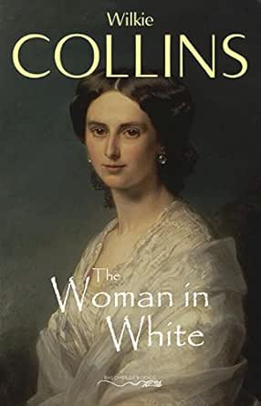

The woman in white letter to author
By Omar Andre
I am 500/1306 pages done as of right now, I am enjoying the novel as of right now, the mystery of everything is fun, and the constant changing of narrators is fun and keeps the novel feeling fresh.
The first thing the novel even tells you is that it is told in past tense by multiple narrators, and I like how you use this anecdote literary device to build up suspense and mystery. Throughout the book, characters, but Walter most often, talk about the past somewhat nostalgically and regretfully. Walter, when he first meets the woman in white, says something along the lines of “if only I knew what would happen because I helped this woman”. I like this for two reasons. First, I enjoy how this creates expectation and tension in the story, you’re always waiting for the bad thing that’s referenced to happen, and it keeps the reader’s attention. Second, it creates a contradiction between what the story says is going to be bad in retrospect and what the reader, based on the current story, thinks. Talking about the same encounter, when Walter meets the woman in white, I would say he does everything that the reader would expect to be nice and gentlemanly, and this provides some contrast with the fact that Walter sounds regretful in his recounting, also making us wonder if we are correct in thinking Walter is doing the right thing. I also think this serves as a kind of foreshadowing. You utilized a lot of foreshadowing in this story, the most noticeable, again, being Walter explicitly telling us something bad is going to happen, but you also utilized foreshadowing in more subtle manners as well. I have not gotten to that part of the book, but as soon as I read that Pesco left his country for unknown “political reasons”, I suspected that was foreshadowing. This foreshadowing makes the story feel thought out, and adds to the mystery for attentive readers, making the eventual unfolding of the story feel more satisfying. I personally didn’t enjoy the beginning of the novel as much, probably because it’s just a little slow to get the reader invested, but also because, when we are invested in the story, during the time Walter’s stay at the mansion was suddenly awkward, it was slowed down by all the imagery included by Walter. I do understand why so much imagery was used, it was needed to describe the relationship between Walter and Laura, how Walter felt about her, and to describe the ‘inevitability’ of his feelings towards her. Even though I understand why it was used, I personally felt that it slowed the story down just as it was ramping up. I also enjoyed that, with the change in point of view, you could also feel the change in diction. Walter is very nostalgic in the way he talks, sometimes regretful, he’s very descriptive, and every time he talks about Laura you can feel the awkwardness through the words. Then, when the lawyer starts narrating, you can also read the difference in what he cares about. When the lawyer narrates, he talks differently, he’s descriptive of different things; when he’s around Laura, you can tell he cares about her in a different way than Walter does, he talks about how he’s known her for a long time, he sometimes talks about her parents and he reminisces about how Laura used to be as opposed to how sad she seems now. When Marian narrates, you can read how much she cares about Walter and Laura, you can read how distressed she is about everything that’s happening and, most relevant at this point in the story, you can read how she feels about Laura’s marriage. The way you use this diction is imperative to making each point of view and section feel different and believable. The way you use the change in point of view serves to make the story feel more real. In a complete, real life trial, there are multiple people involved, and all of them with different recollections of what happened, which is what also happens on this novel. Changing point of view also serves to characterize everyone and their relationships. I especially see this with Marian and Walter’s relationship. When Walter is narrating, you can read Marian’s dialogue saying she respects Walter, but you can see it even more when Marian herself is narrating, because she constantly wishes Walter well, and she pretty constantly thinks about Walter. Because of the change in point of view, we also get to know things that we wouldn’t with only Walter’s point of view, for example, during Marian’s narration, we see that Walter’s feelings are reciprocated by Lauren, something that wasn’t totally clear during Walter’s narration.
I’ve overall enjoyed this novel, and look forward to finishing it and unraveling the mystery.